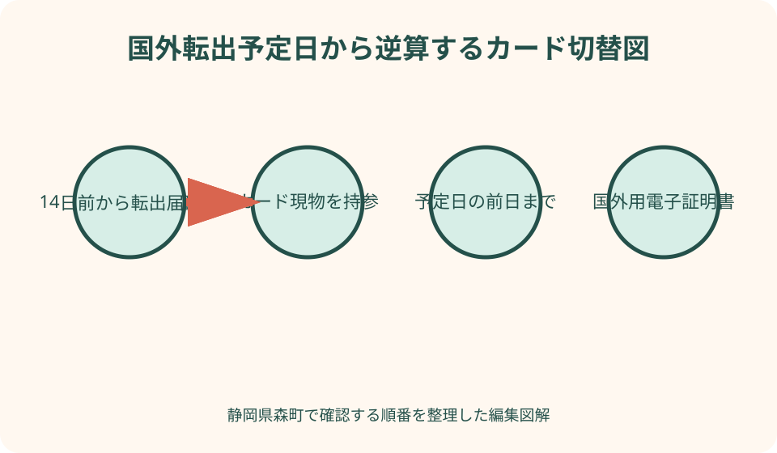
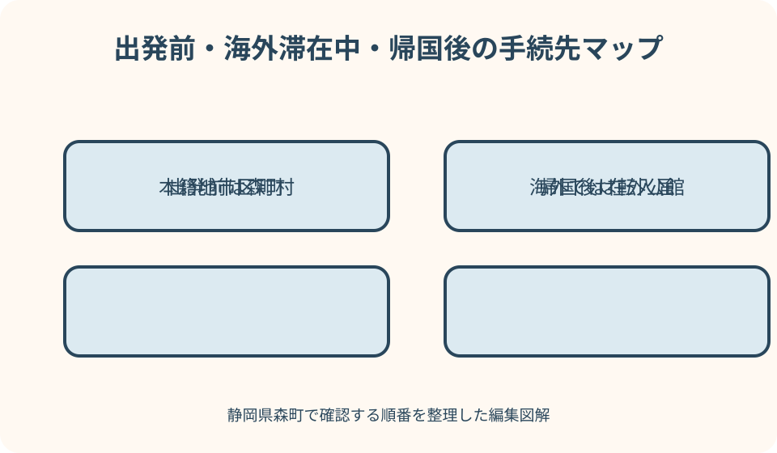

行政手続・証明書｜最終確認 2026-08-10
静岡県森町から国外転出するときのマイナンバーカード｜継続利用・電子証明書・帰国後
国外転出届を提出すれば、マイナンバーカードも自動的に海外仕様へ切り替わるわけではありません。日本国籍の人が国外で継続利用するには、有効なカードを森町役場へ持参し、国外転出予定日の前日までに切替手続を終える必要があります。オンラインの転出届、電子証明書、家族分、外国籍の人、出国後に気付いた場合、帰国後を別々に整理します。

編集イラスト国外転出届とカード継続利用は二つの確認事項
森町から海外へ生活の本拠を移すときは、住民票の国外転出届が必要です。森町公式の転出届ページでは、引っ越し予定日の十四日前から届出できると案内しています。一方、マイナンバーカードを海外でも継続利用する切替は、転出届の内容をカード券面とICチップへ反映する別の処理です。
国のマイナンバーカード総合サイトによると、日本国籍の人は2024年5月27日以降、所定の手続をすれば国外転出後もカードを利用できます。これは、カードを持って出国すれば自動的に有効性が続くという意味ではありません。出国前に住民登録地である森町へカードを提出し、国外継続利用を申請します。
手続では、町がカード券面へ国外転出日を追記し、ICチップ内の住所記録を変更し、国外転出者向けの電子証明書を発行します。返却されたカードが国外転出者向けとして利用可能になります。券面に書き足しただけか、電子証明書まで完了したかを受取時に確認してください。
海外赴任の辞令、航空券、賃貸解約など準備が重なる時期ほど、転出届とカード切替を一つの予定に見せないことが大切です。家族ごとに『住民票の転出届』『カード持参』『国外継続利用』『電子証明書』の四欄を作り、完了した本人だけに日付を入れます。
転出予定日の前日までという期限を最優先する
国外継続利用の手続は、国外転出予定日の前日までに行う必要があります。総合サイトは、期限までに手続せず国外へ転出すると、カードが国外転出予定日に失効すると明記しています。出国便の前日ではなく、転出届へ記載する『国外転出予定日』の前日が基準です。
たとえば住居を引き払い、空港近くへ数日滞在してから出国する場合、航空券の日付だけでは期限を決められません。住民票上の転出予定日をいつにするかを森町へ確認し、その前にカード処理を終える日を置きます。休日や年末年始を挟むなら、役場開庁日からさらに逆算します。
森町の転出届は引っ越し予定日の十四日前から受け付ける案内です。カード切替も同時に行えるか、家族全員がそろわない場合の扱い、暗証番号を忘れた場合の所要時間を事前に住民生活課へ尋ねます。期限最終日に初めて窓口へ行くと、書類不足や暗証番号再設定へ対応できません。
転出予定日が変更になった場合は、航空券の変更だけで終わらせず、住民票の届出とカード券面へ記録した日付に影響するか森町へ連絡します。カードに国外転出日が追記された後の変更を自分で訂正してはいけません。新しい予定日と実際の出国日を伝え、必要な修正手続を確認します。
マイナポータルの転出届だけではカード切替が完了しない
森町は、マイナンバーカードを持つ人がマイナポータルから転出届を提出できる引越しワンストップサービスを案内しています。しかし、国外継続利用ではカード現物への券面追記とICチップ処理が必要です。オンラインで送信完了と表示されても、カードを海外仕様へ切り替えた証明にはなりません。
国内の別市区町村へ移る転出と、国外転出は、転入先の仕組みも異なります。国内転出では新住所地で転入届を行いますが、国外転出後に日本の別自治体で転入届をするわけではありません。オンライン画面で国内引越し向けの手順を選ばず、国外転出であることを森町へ明確に伝えます。
すでにオンラインで転出届を送った人は、役場へ行かなくてよいと判断せず、国外継続利用のためにいつカードを持参するかを問い合わせます。申請状態、転出予定日、本人と家族の人数を伝え、窓口で追加する書類を確認します。二重の転出届を出すのではなく、送信済み情報へ必要なカード処理をつなげます。
オンライン申請に使う署名用電子証明書が期限切れ、住所変更で失効、暗証番号ロックという場合は、転出届の送信自体が進まないことがあります。復旧に時間を使うより、森町窓口で紙の転出届とカード切替をまとめられるか相談し、期限を守る経路へ切り替えます。

日本国籍と外国籍でカードの扱いを分ける
国外継続利用の対象を、森町に住むすべてのカード保有者へ一律に当てはめてはいけません。デジタル庁は、日本国籍の人は手続により国外でも継続利用できる一方、日本国籍を持たない人は国外転出時にカードを返納する必要があると案内しています。世帯単位ではなく一人ずつ国籍とカード状態を確認します。
日本国籍を持たない人のカードは国外転出後に失効します。返納手続を経たうえで、個人番号を把握する手段として穴を開けたカードの還付を受けられる場合があるとデジタル庁は説明しています。切断や穴開けを自宅で行わず、森町窓口へ返納と還付希望を伝えます。
国際結婚世帯では、配偶者と子どもの国籍が同じとは限りません。家族全員分のカードを一袋にまとめる前に、氏名、国籍、カード期限、国外継続利用の対象、返納対象を一覧にします。子どもの二重国籍など個別事情は、家族判断で分類せず森町へ確認してください。
通知カードや個人番号通知書は、顔写真付きマイナンバーカードと同じ制度ではありません。デジタル庁のFAQは、通知カードの返納についても区別して案内しています。手元にある紙が何なのかを確認し、古い通知カードを国外継続利用カードへ切り替えると思わないようにします。
電子証明書と暗証番号を出国前に確認する
国外継続利用では、現在の国内向け電子証明書をそのまま残すのではなく、国外転出者向けの電子証明書発行が関係します。署名用と利用者証明用のどちらが発行されたか、海外で使う予定のサービスにどちらが必要かを窓口で確認します。カード本体の切替だけで電子申請が必ず使えるとは限りません。
暗証番号は、署名用の英数字と利用者証明用の数字四桁を区別します。番号を忘れた、ロックしている場合は、国外継続利用と同時に再設定できるか森町へ相談します。家族が番号を代理入力するのではなく、本人が設定できる日程を確保します。
海外で暗証番号を忘れた場合、国内の森町役場へすぐ来庁できません。国の案内では、国外転出者向けカードの暗証番号再設定は本籍地市区町村または在外公館を通じて行えますが、在外公館経由ではカードが往復し、受取まで時間がかかります。出国前の動作確認が重要です。
マイナポータル、e-Tax、年金など海外で使う予定のサービスは、カード以外に対応スマートフォン、ICカード読取、登録電話番号、メール受信が必要なことがあります。カード切替当日にログインだけ確認し、重要な申請を本番送信しないようにします。国外の通信環境も含め、代替手段を用意します。
良い点
国外継続利用の良い点は、海外赴任や留学のたびに国内用カードを失効させ、新規申請からやり直す必要を減らせることです。電子証明書が有効なら、海外から利用できる日本のオンライン手続へ本人確認の手段を持てます。ただし、すべての行政手続が国外から完結するという保証ではありません。
カードを継続すれば、帰国後も同じ個人番号とのつながりを確認しやすくなります。個人番号自体は国外転出で新しい番号へ変わるものではありません。カードの有効性、住民票の状態、個人番号という三つを分けて理解すると、海外の勤務先や日本の手続先へ説明しやすくなります。
転出前に電子証明書と暗証番号を見直すことで、海外で使えないと気付くリスクを下げられます。森町役場でカード現物を確認してもらい、券面追記とICチップ処理を受けるため、オンライン送信だけより完了点が明確です。受取時に確認事項を復唱できます。
家族単位の移動でも、一人ずつ手続状況を管理する習慣ができます。本人だけ赴任し家族は森町に残る場合、全員の住民票を国外へ移すわけではありません。実際に生活の本拠を移す人を確定し、カード切替の対象を絞ることで、誤った世帯全員の届出を避けられます。
注文したい点
注文したいのは、森町の転出届ページが国内引越しとオンライン手続を中心に説明しており、国外継続利用の前日期限が同じ画面で目立ちにくい点です。国外転出を選んだ人へ、カード持参と電子証明書発行までを強く示す導線があると、オンラインだけで完了したという誤解を減らせます。
制度上の『国外転出予定日の前日まで』と、旅行者が考える『飛行機の前日』は一致しないことがあります。転出届に記載する日、出国日、森町役場へ行く日の三本を図で示す案内が必要です。特に休日を挟む場合の最終開庁日を自分で確認できる表示が望まれます。
国籍により継続利用と返納へ分かれるため、多国籍世帯には短い一般案内だけでは不足します。日本国籍の配偶者、外国籍の配偶者、子どもを同じ書類で処理しない説明と、代理手続の必要書類を事前に確認できる案内が重要です。窓口で初めて差を知ると再訪が増えます。
国外転出者向けカードは、氏名変更、暗証番号再設定、更新、紛失時に本籍地市区町村や在外公館が関係します。出国時に一枚の連絡先表を渡し、どの事由でどこへ相談するか案内できれば、海外で森町へ連絡すべきか本籍地へ連絡すべきかの迷いを減らせます。
本人と家族の来庁条件を出発前に決める
家族全員が国外転出する場合でも、代表者がカードをまとめて持参すれば必ず処理できるとは限りません。国外継続利用申請の代理範囲、暗証番号入力、委任状、同一世帯員の扱いを森町へ確認します。カードごとに本人来庁か代理かを決め、必要書類を分けます。
森町公式の転出届ページでは、本人または一定の関係者以外が届ける場合の委任状に触れています。しかし、住民票の転出届を代理できることと、電子証明書を含むカード処理を同じ条件で代理できることは別です。一般の住民異動用委任状だけで足りると断定しません。
本人がすでに森町を離れ、空港近くや別の県に滞在している場合は、カードの郵送だけで家族が切り替えられると思わず、早急に住民生活課へ相談します。国外転出予定日前に本人が戻れるか、代理方式が可能か、転出予定日の見直しが必要かを確認します。
子どものカードでは、親権者など法定代理人の関与、暗証番号、署名用電子証明書の有無が大人と異なります。年齢だけで必要物を決めず、カード保有の有無、同行可否、親子関係を示す書類が必要かを確認します。兄弟のカードと申請書を混ぜないよう個別の封筒にします。
手続をせず出国した場合は失効カードを使わない
国外継続利用を行わず転出予定日を迎えると、出国前に持っていたカードは失効します。外見が変わらず、有効期限が券面に残っていても、本人確認や電子証明書へ使えると考えてはいけません。失効後にオンライン手続へ何度も読み取らせず、国外転出者向けカードの新規申請を確認します。
国の総合サイトは、2015年10月5日以降に国外転出し、現在カードを持っていない一定の日本国籍者が国外から申請できる制度を案内しています。2026年5月から国外転出者向けオンライン申請も開始されていますが、国内居住者向け申請サイトとは別です。対象条件と最新入口を公式サイトで確認します。
申請・受取には在外公館、本籍地市区町村、一時帰国先の市区町村など選択肢が関係します。どこでも即日受取できるわけではありません。受取場所、本人確認、交付までの期間、旧カード返納の扱いを申請前に整理します。旅行予定へ受取日を確定事項として入れないでください。
失効した国内用カードを記念として保管したい場合も、返納義務や還付方法を確認します。自分で廃棄すると、個人番号の確認手段や再申請時の説明に影響する可能性があります。国外から返納する窓口や在外公館経由の方法を国の手続ページで調べます。
海外滞在中の変更・更新・紛失を想定する
海外滞在中に婚姻などで氏名が変わった場合、国外転出者向けカードの券面・記録変更が必要です。国の案内では、本籍地市区町村または在外公館で手続する経路があります。在外公館では新しいカードの交付申請になる場合があるため、旧カードの返納と受取期間を確認します。
カードの有効期限が近づいたら、国外転出者向けの更新案内を確認します。総合サイトでは、有効期間満了日の一年前から更新可能とされていますが、受取場所によって交付準備中にカード機能を使えない期間が生じる場合があります。期限直前ではなく、利用予定から逆算します。
海外で紛失した場合は、国外転出者向け専用ダイヤルで一時停止します。国は24時間365日の受付を案内していますが、国際通話料金がかかります。滞在国の警察等が発行する紛失証明は再交付で必要になる場合があり、外国語書類には日本語訳が求められることがあります。
暗証番号再設定を在外公館経由で行うと、カードが本籍地市区町村との間を移動し、手元に戻るまで長期間かかることがあります。受取連絡後に一定期間受け取らないと失効する扱いもあるため、登録メールを受信できる状態にします。迷惑メール設定と帰省予定も確認します。

帰国して森町へ住むときは転入届とカード処理を行う
海外から森町へ生活の本拠を戻すときは、帰国しただけで住民票が自動復活するわけではありません。森町公式の転入届ページでは、引っ越し後十四日以内の届出と、国外転入時のパスポート、戸籍謄本・戸籍の附票などを案内しています。本籍が森町の場合の書類差も確認します。
国外転出者向けカードを持って帰国した人は、転入届とあわせて国内での継続利用に必要なカード処理を受けます。国の手続ページでは、国外からの転入届後にカード手続をしないことが失効事由に挙げられています。カードを自宅へ置いたまま転入届だけ出さないようにします。
帰国便の入国日と、森町で実際に住み始めた日は同じとは限りません。転入届の期間をどの日から数えるか、パスポートの入国印が省略された場合に搭乗券など何を示すかを町へ確認します。空港での自動化ゲート利用も含め、入国日を証明できる資料を保管します。
外国籍の家族が森町へ転入する場合は、パスポートと在留カードなど必要書類が日本国籍者と異なります。国外転出時に返納したカードの再取得も別の手続です。世帯全員を『帰国者』の一語で扱わず、国籍と在留資格、以前の個人番号を一人ずつ確認します。
代案・結論
転出予定日の前日までに森町役場へ行けないと分かったら、自己判断でオンライン転出届だけを送らず、直ちに住民生活課へ連絡します。代理手続の可否、予定日の変更、出国後の新規申請という選択肢を確認します。期限を過ぎたカードを継続利用扱いへ戻せると期待しません。
暗証番号を忘れた場合は、番号候補を試し続ける代わりに、国外継続利用と同日に再設定できるかを事前相談します。電子証明書が不要と思っても、海外から利用する可能性があるサービスを書き出します。発行しない選択の影響を理解してから申請内容を決めます。
カードの有効期限が転出直後に来る場合は、国外切替と更新の順序を森町へ確認します。短期間で二度の手続になるなら、更新可能時期、旧カードと新カードの受取、電子証明書を使えない期間を国の案内と照合します。転出当日に全処理が終わるとは限りません。
結論として、国外転出届、カード現物の国外継続利用、国外用電子証明書の三点を、予定日前日までに森町で確認します。日本国籍か、本人来庁か、家族分があるかを先に伝えます。出国後は本籍地・在外公館、帰国後は森町の転入届へつなぐと、カードの有効性を途切れさせにくくなります。
大石の視点
大石の視点では、海外転出の準備表を航空券や荷造りだけで作らないことが重要です。森町の住所を離れる日、役場へ行く日、カード切替期限、出国日を一本の時間軸に並べます。似た日付を別欄にすることで、期限の一日前を空港で迎える失敗を防げます。
家族が森町に残る場合、カードや暗証番号を預けておけば安心とは限りません。国外転出者向けカードは本人が海外で使う本人確認手段です。家族にはカード画像や番号ではなく、本籍地、相談する在外公館、紛失時の専用ダイヤル、更新時期だけを共有します。
森町から山間部を含む地域外へ移動し、さらに海外へ渡る日は、役場への再訪が大きな負担になります。出発前の電話で、対象者全員の国籍、カード期限、暗証番号、代理人の有無を伝え、持ち物を確定させます。一度の窓口で何を終えるかを明確にすることが地域に合う準備です。
国外継続利用はカードを持ち続けること自体が目的ではありません。海外で必要な日本の手続へアクセスできるようにし、帰国時に本人確認をつなぐ道具です。使うサービスがない人も、返納・継続の違いと将来の再申請を理解し、自分の予定に合う選択を窓口で確認します。
出発前に家族ごとに作る確認表
確認表の一列目には、氏名、日本国籍の有無、カードの有無と券面期限を書きます。二列目には国外転出予定日、森町役場の来庁日、本人または代理人を記入します。三列目には国外継続利用、券面追記、電子証明書の完了日を入れます。
家族のうち一部が森町へ残る場合、その人の行には転出届を付けません。短期旅行や一時的な海外滞在で住民票を移さない人も、国外転出制度へ当てはめません。生活の本拠がどこになるかは個別判断を要するため、不明なら滞在期間と住居状況を森町へ説明します。
持ち物欄には、マイナンバーカード、本人確認書類、町が指定する申請書、関連する保険証等、委任関係の書類を記載します。パスポートや航空券がカード切替に必須かは町の最新回答で確定します。暗証番号そのものを一覧へ書かないでください。
完了欄には、カードを受け取った時刻、国外転出日の追記、電子証明書、海外での連絡先を記録します。窓口で受けた説明のうち、紛失、氏名変更、更新、帰国時の手続先も短く残します。海外へ持参する紙には個人番号をむやみに複写しません。
当日の窓口で確認する最終項目
受付では、最初に『国外転出であり、カードの国外継続利用を希望する』と伝えます。国内転出と誤解されないよう、国名、転出予定日、日本国籍、家族分の有無を整理します。オンラインで転出届を送信済みなら、送信日と受付状況も伝えます。
処理中は、券面へ国外転出日が追記されること、ICチップの住所記録が変更されること、国外転出者向け電子証明書が発行されることを確認します。署名用と利用者証明用の暗証番号を忘れている場合は、その場で推測せず再設定の案内を受けます。
カード返却時は、氏名、転出日、有効期限を確認します。家族分を受け取るときはカードを取り違えないよう、一枚ずつ申請書と照合します。海外で利用予定のサービスについて、町が保証できる範囲と各サービス運営者へ確認する範囲を分けます。
最後に、紛失時の専用ダイヤル、本籍地市区町村、最寄りの在外公館、帰国後の森町転入届をメモします。出国後にカードが失効していると判明した場合の新規申請入口も国の公式サイトで保存します。これで出発前、滞在中、帰国後の三段階がつながります。
公式情報・確認先
掲載内容は次の一次情報を基礎に整理しました。営業、料金、催し、交通は変わるため、出発前または手続き前にリンク先で最新情報を確認してください。
- 転出届（静岡県森町、2026-08-10確認）
- 引っ越しワンストップサービス（静岡県森町、2026-08-10確認）
- 転入届（静岡県森町、2026-08-10確認）
- マイナンバーカードを国外で利用する（地方公共団体情報システム機構（マイナンバーカード総合サイト）、2026-08-10確認）
- 国外転出者向けマイナンバーカードの手続き（地方公共団体情報システム機構（マイナンバーカード総合サイト）、2026-08-10確認）
- よくある質問：マイナンバーカードについて Q3-19（デジタル庁、2026-08-10確認）